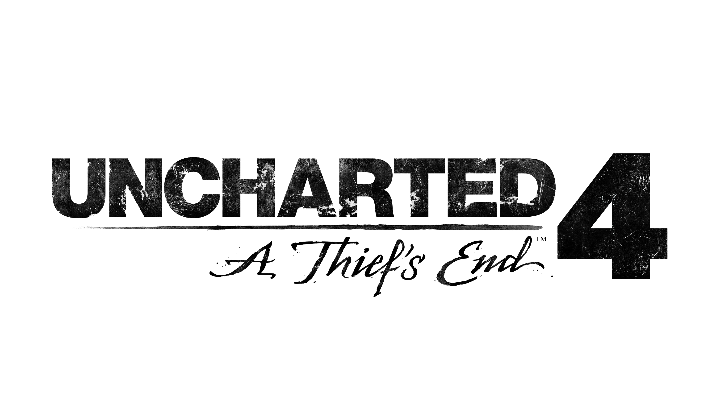
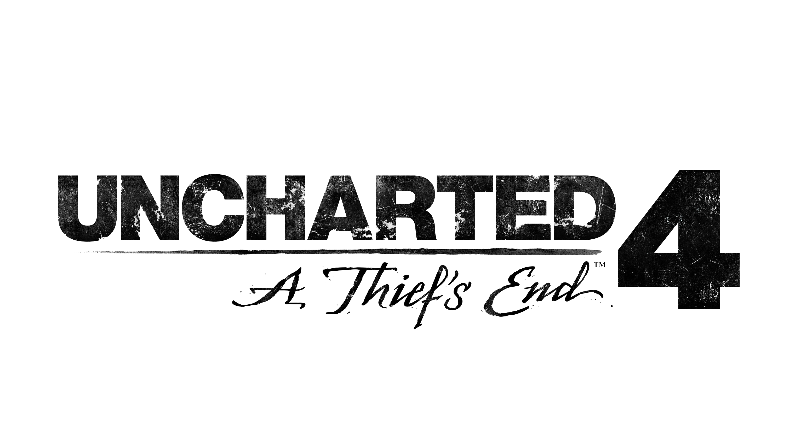

telegram

correo

"Los juegos me cambiaron la vida, ahora ellos son parte de mi"
FPXlord - LoL WC 2019
"Nuestros reclutas pasan una dura prueba antes de entrar."
insomnia Gaming - CoD Champions 2017
"Grandes jugadores hemos logrado conseguir gracias a G4G"
TeamNinja - Rocket League WC 2020
"Nuestros integrantes son de muy alto nivel."
Kaos Latin Gamer - CS:GO ProTeam
"Recuerdo mi primera consola, fue un viaje de ida. Ahora, mi vida."
ZzGlazp - Valorant Winner M.V.P. 2018
"Desde España hacia el mundo, compartimos conocimiento y experiencias."
G2 Esports - Lol WC & Valorant Winner 2020
 

458 carreras finalizadas.
297 enmemigos completados.
604 misiones eliminados.

387 trofeos comlpetados.
272 partidas terminadas.
105 desafios completados.